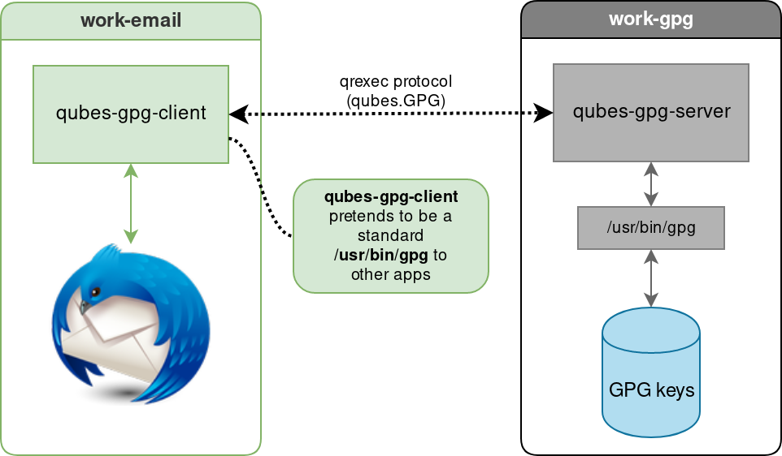

Split GPG-2
Qubes OS allows you to split the management and usage of GPG keys. You can store your secret keys in one trusted qube and use them in another less trusted qube.
This way the compromise of your less trusted qube does not allow the attacker to automatically also steal all your keys.
How-to split your GPG keys between two qubes
The following how-to will set up Split GPG-2 with two qubes:
one qube holding the private keys, called server-qube. This qube is offline and should be trusted.
the other qube using the keys, called client-qube. This qube doesn't have to be trusted as much as the server.
Each time you want to do something with a GPG key, the client qube will delegate the operation to the server qube. This qube will ask you to confirm the operation.
Install Split GPG-2
In the template(s) qube(s) used by the server qube and the client qube, install the split-gpg2 package.
備註
If you use a minimal template, make sure to install zenity package.
Create a policy for Split GPG-2
In dom0, create or edit an RPC policy. Add a line like the following and make sure to replace client-qube and server-qube by the appropriate values.
qubes.Gpg2 + client-qube @default allow target=server-qube
Generate or import the secret keys in the server qube
In the server qube, you have two options:
either generate your secret keys, like this:
[user@server-qube] $ gpg --gen-key
or, if you want to use some old keys, previously generated in another qube, import them and the ownertrust. Make sure to replace
/home/user/QubesIncoming/<SOME_OTHER_QUBE>/[...]by the path of the expected file:[user@server-qube] $ gpg --import /home/user/QubesIncoming/<SOME_OTHER_QUBE>/secret-keys-export [user@server-qube] $ gpg --import-ownertrust /home/user/QubesIncoming/<SOME_OTHER_QUBE>/ownertrust-export
備註
Ensure your key doesn't have a passphrase set.
In both situations, you have to export the public part of your keys and the "ownertrust" values in the client qube:
[user@server-qube] $ gpg --export > public-keys-export
[user@server-qube] $ gpg --export-ownertrust > ownertrust-export
[user@server-qube] $ qvm-copy public-keys-export ownertrust-export
警告
Do not export the private keys!
Set up the client qube
Enable the split-gpg2-client service in the client qube
The first step is to enable the qube service called split-gpg2-client. Restarting the client qube is needed.
Import the public keys and ownertrust
If you have previously exported the public keys and the "ownertrust" values from the server qube. Now, you have to import them in the client qube. Replace the following paths by the correct values.
[user@client-qube] $ gpg --import /home/user/QubesIncoming/server-qube/public-keys-export
[user@client-qube] $ gpg --import-ownertrust /home/user/QubesIncoming/server-qube/ownertrust-export
Check that Split GPG-2 works
You should be able to run gpg -K in the client qube:
[user@client-qube] $ gpg -K
/home/user/.gnupg/pubring.kbx
-----------------------------
sec# rsa2048 2019-12-18 [SC] [expires: 2021-12-17]
50C2035AF57B98CD6E4010F1B808E4BB07BA9EFB
uid [ultimate] test
ssb# rsa2048 2019-12-18 [E]
疑難排解
gpg-agent only shows the "keygrip"
If you have a passphrase on your keys and gpg-agent only shows the “keygrip” (something like the fingerprint of the private key) when asking for the passphrase, then make sure that you have imported the public key part in the server domain.
Subkeys vs primary keys
Split GPG-2 only knows a hash of the data being signed. Therefore, it cannot differentiate between e.g. signatures of a piece of data or signatures of another key. This means that a client can use Split GPG-2 to sign other keys, which Split GPG did not allow.
To prevent this, Split GPG-2 creates a new GnuPG home directory and imports the secret subkeys (not the primary key!) to it. Clients will be able to use the secret parts of the subkeys, but not of the primary key. If your primary key is able to sign data and certify other keys, and your only subkey can only perform encryption, this means that all signing will fail. To make signing work again, generate a subkey that is capable of signing but not certification. Split GPG-2 does not generate this key for you, so you need to generate it yourself. If you want to generate a key in software, use the addkey command of gpg2 --edit-key. If you want to generate a key on a smartcard or other hardware token, use addcardkey instead. You will need to import your public keys again.
Server options
If you want to change some server option, copy /usr/share/doc/split-gpg2/examples/qubes-split-gpg2.conf.example to /home/user/.config/qubes-split-gpg2/qubes-split-gpg2.conf and change it as desired, it will take precedence over other loaded files, such as the drop-in configuration files with the suffix .conf in /home/user/.config/qubes-split-gpg2/conf.d/.
By setting up some values in the configuration file, you can change some parameters. The configurations files are INI files, you can set global options in the DEFAULT section, or provide some client specific options in their own client:QUBE_NAME section (where QUBE_NAME is the name of the client). The following configuration is an example where no qube is automatically accepted besides personal qube:
[DEFAULT]
autoaccept = no
[client:personal]
autoaccept = yes
- autoaccept
- Type:
boolean or integer
- Default:
no- Allowed values:
no,yesor any integer
By default, all requests made to the server qube need to be confirmed. You can tell Split GPG-2 to accept requests: never (
no), always (yes) or during a period of time after a successful request. To accept all requests following a successful one during one minute, use a value of60seconds.
This option has two alternatives:
- pksign_autoaccept
- Type:
boolean or integer
- Default:
no- Allowed values:
no,yesor any integer
same as
autoacceptbut only for signing requests
- pkdecrypt_autoaccept
- Type:
boolean or integer
- Default:
no- Allowed values:
no,yesor any integer
same as
autoacceptbut only for decrypt requests
- verbose_notifications
- Type:
boolean
- Default:
no- Allowed values:
nooryes
Setting
verbose_notificationstoyeswill provide more notifications.
- allow_keygen
- Type:
boolean
- Default:
no- Allowed values:
nooryes
警告
This feature is new and not much tested. Therefore it’s not security supported!
By setting
allow_keygentoyes, you can allow the client to generate new keys. Normal usage should not need this.
- gnupghome
- Type:
full path
- Default:
empty
You can set up a different GnuPG home from the default
/home/user/gpg-home, usinggnupghome.
- isolated_gnupghome
- Type:
full path
- Default:
empty
If you store different keys for different client qubes in the same server qube, you can isolate each GnuPG home, by setting
isolated_gnupghome. The value points at a directory where each client will get its own subdirectory. For example, when this option is set to/home/user/gpg-home, then the qube personal will use/home/user/gpg-home/personalas GnuPG home.If you do this, don't forget to use the option
--gnupg-homeor the environment variableGNUPGHOMEwhen using gpg commands.
- debug_log
- Type:
path
- Default:
empty
Enable debug logging and set the debug log path.
警告
This is for debugging purpose only, everything will be logged including potentially confidential data/keys/etc
Notes about Split GPG-2

Example of the Split GPG-2 architecture
In a qube called work-email (with a green level of trust), qubes-gpg-client pretends to be a standard /usr/bin/gpg to other apps, here with Thunderbird.
In the work-email qube, qubes-gpg-client is communicating with qubes-gpg-server located in the work-gpg qube (with a black level of trust). The communication is made through the qubes.Gpg2 remote procedure call using the qrexec protocol.
Inside the work-gpg qube, qubes-gpg-server has access to the GPG key, through /usr/bin/gpg.
Using Split GPG-2 with Split GPG-1
Using Split GPG-2 as the “backend” for Split GPG is known to work.
Advanced usage: checking what is signed, etc.
Similar to a smartcard, Split GPG-2 only tries to protect the private key. For advanced usages, consider if a specialized RPC service would be better. It could do things like checking what data is signed, detailed logging, exposing the encrypted content only to a VM without network, etc.
Advantages of Split GPG vs. traditional GPG with a smart card
It is often thought that the use of smart cards for private key storage guarantees ultimate safety. While this might be true (unless the attacker can find a usually-very-expensive-and-requiring-physical-presence way to extract the key from the smart card) but only with regards to the safety of the private key itself. However, there is usually nothing that could stop the attacker from requesting the smart card to perform decryption of all the user documents the attacker has found or need to decrypt. In other words, while protecting the user’s private key is an important task, we should not forget that ultimately it is the user data that are to be protected and that the smart card chip has no way of knowing the requests to decrypt documents are now coming from the attacker’s script and not from the user sitting in front of the monitor. (Similarly the smart card doesn't make the process of digitally signing a document or a transaction in any way more secure – the user cannot know what the chip is really signing. Unfortunately this problem of signing reliability is not solvable by Split GPG.)
With Qubes Split GPG-2 this problem is drastically minimized, because each time the key is to be used the user is asked for consent (with a definable time out, 5 minutes by default), plus is always notified each time the key is used via a tray notification from the domain where GPG backend is running. This way it would be easy to spot unexpected requests to decrypt documents.